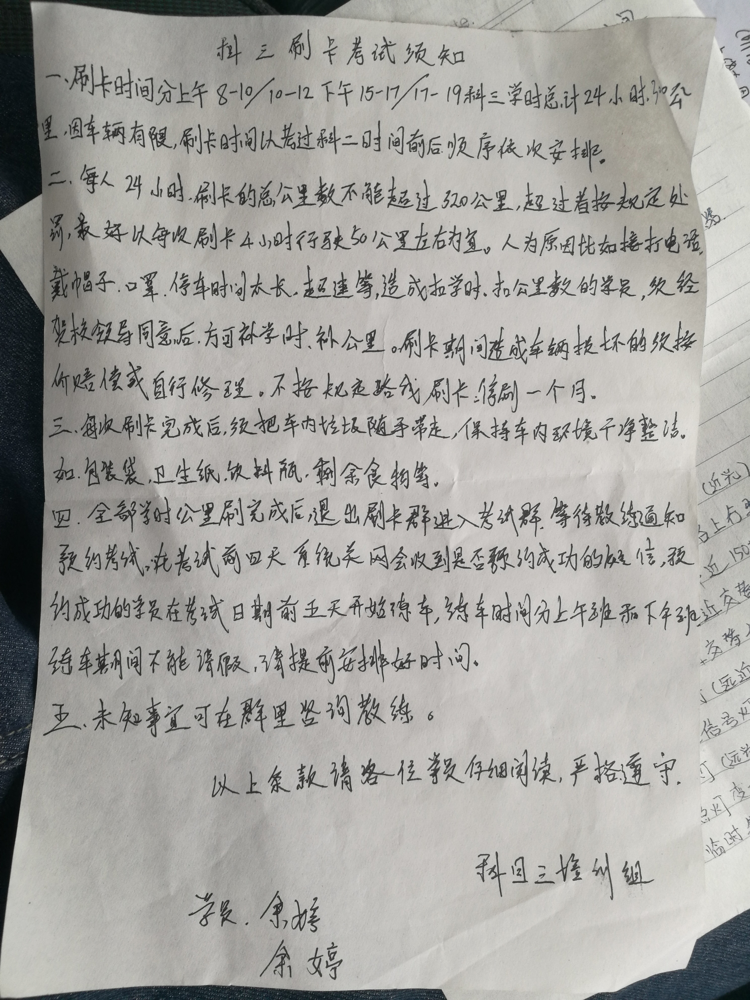
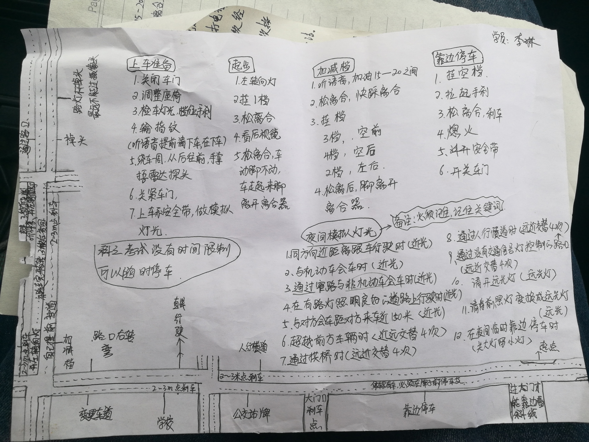
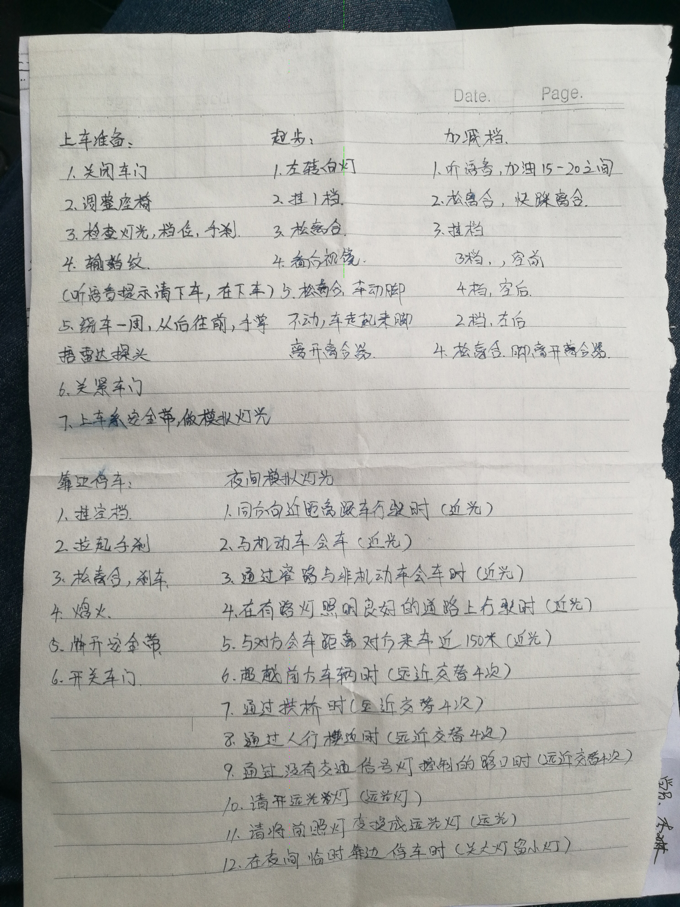
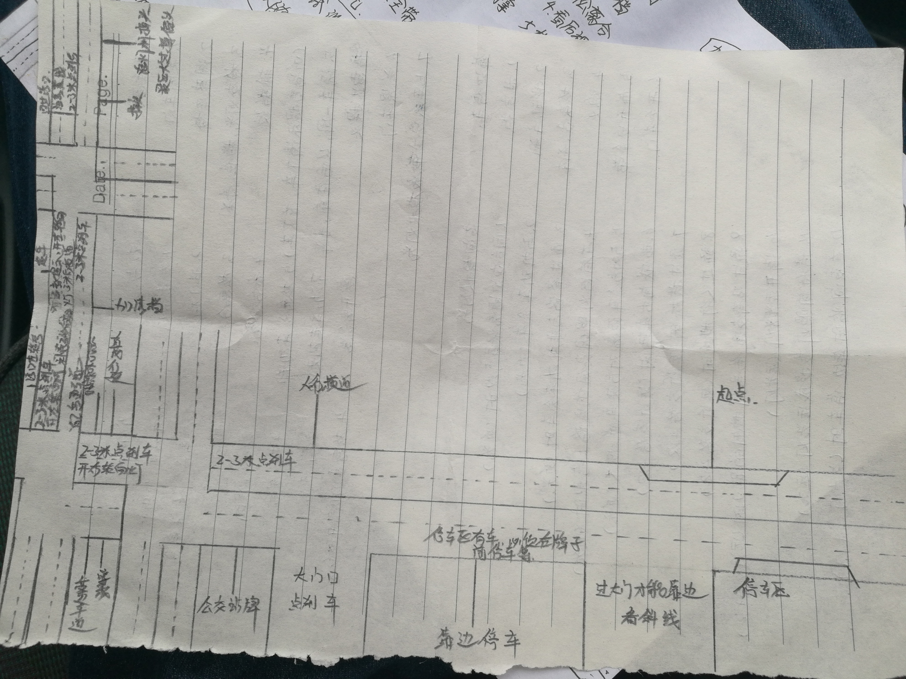

科目三
2020-08-13 科目一通过 2020-11-02 科目二通过考试线路： 注意： 换挡时候先回到空挡在转到指定的挡，不可跳换挡。转向灯必须是3秒以上。 在交叉路口转弯车让直行车先行，右方道路车先行，右转弯让左转弯车。右转弯不受信号灯约束。 路实线不能压，虚线不能长时间压着行驶。 发动机转速过高不行。 灯： 请将前照灯变为远光灯。（-----远光灯-----） 夜间在照明不良条件下行驶。（-----远光灯，开示宽灯-----） 夜间在没有路灯，照明不良条件下郊区行驶。（-----远光灯，示宽灯-----） 夜间同方向近距离跟车行驶。（-----近光灯-----） 夜间在没有路灯，照明不良条件下市区行驶。（-----近光灯，示宽灯-----） 夜间通过急弯，坡路，拱桥，人行横道或者没有交通信号灯控制的路口。（-----远近灯光交替闪灯两次-----） 夜间通过没有交通信号灯控制的路口。（-----远近灯光交替闪灯两次-----） 雾天行驶。（-----前照灯，前后雾灯，警示灯-----） 夜间在窄路，窄桥与非机动车会车。（-----近光灯-----） 夜间与对方会车距对方来车将近150米。（-----近光灯-----） 夜间在道路上发生故障，妨碍交通又难以移动。（-----关大灯，示宽灯，警示灯-----） 模拟夜间考试完成，请关闭所有灯光。（-----关闭所有灯光-----） （-----危险警示bai灯是黄du色双闪，就是按下zhi三角叹号按钮亮那个。示宽灯dao是红色常内亮的，大灯按容钮拧到第一档即为示宽灯。-----） 第一 上车准备： 从左车门开始逆时针绕车一边，打开车门前观察后方交通情况。 第二 起步： 检查关紧车门，调整座椅和三个后视镜，系安全带，检查手刹是否拉起，是否在空挡。稍加踩加速板，点火。点火后稍加踩加速板，观察：仪表，灯光，刮水器，喇叭，制动发动机响声是否正常。 听到起步指令后（-----或者问考官-----）=》打左转向灯，喇叭，踩离合器，挂一挡，看左右后视镜，转向灯3秒后配合离合器和油门平稳起步。起步后看左后视镜，安全情况下转入2挡，向左轻打转向盘，驶入行车道，回正，关闭转向灯。 第三 直行： 听到保持直线令后 =》眼睛盯着前方80～100米处保持直线行驶，偏差角度不能超10度，每个20秒后视镜观察后方交通，视线不能离开2秒。根据交通情况适当换挡和制动。 第四 加减挡： 听到加减挡指令后 =》换到一挡状态。目视前方，控制好方向盘，踩加速踏板当车速高一级时候立即换挡，依次提升至4挡。完成加挡操作后，当车速减速至低一级档位时候迅速减挡，依次减到2挡。 第五 变更车道： 听到考试指令后 =》打转向灯3秒后（-----左右根据情况-----），后视镜观察交通安全后变更车道。（-----变更车道时候保持安全距离，控制速度，不得妨碍其他车辆，当不具备变更车道条件时候减速慢行。-----） 第六 靠边停车： 听到靠边停车指令后 =》打右转向灯，通过内外后视镜观察后方和右方交通情况，逐级减挡降低车速，使汽车靠路右边平稳停车。1.拉手刹车 2.挂空挡 3.松开制动和离合器踏板 4.关闭点火开关。 解开安全带，侧头观察后方和左边交通情况，确认安全后下车。 11.09



